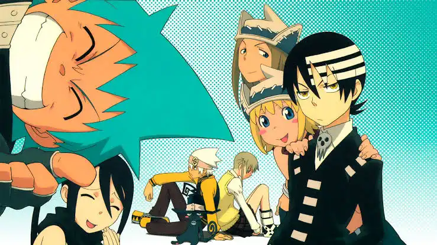
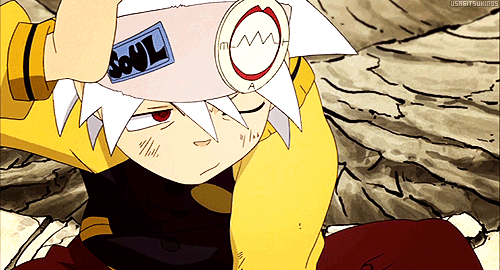
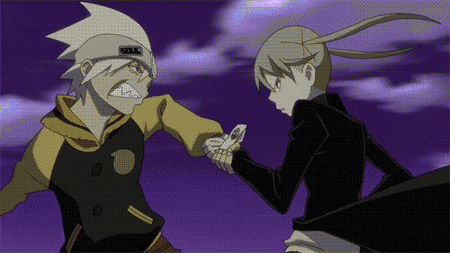
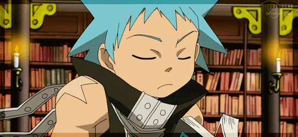
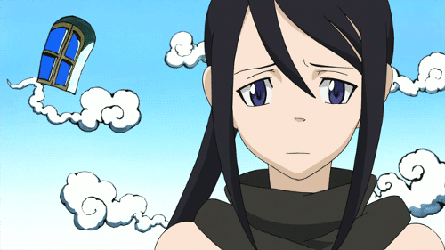
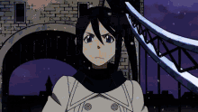
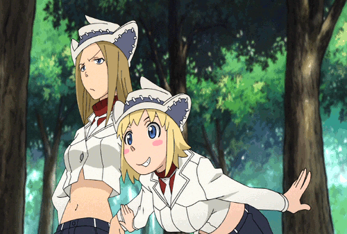
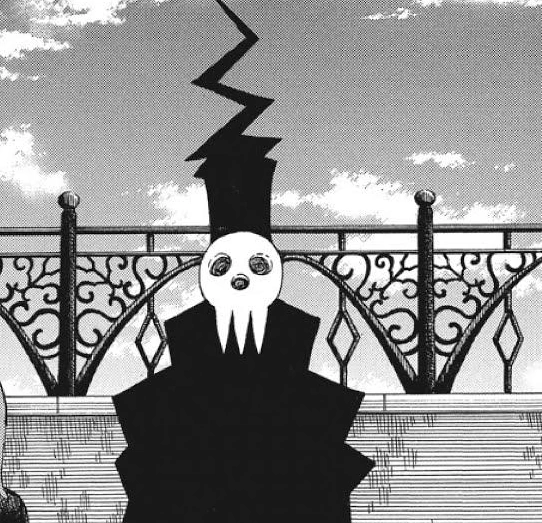
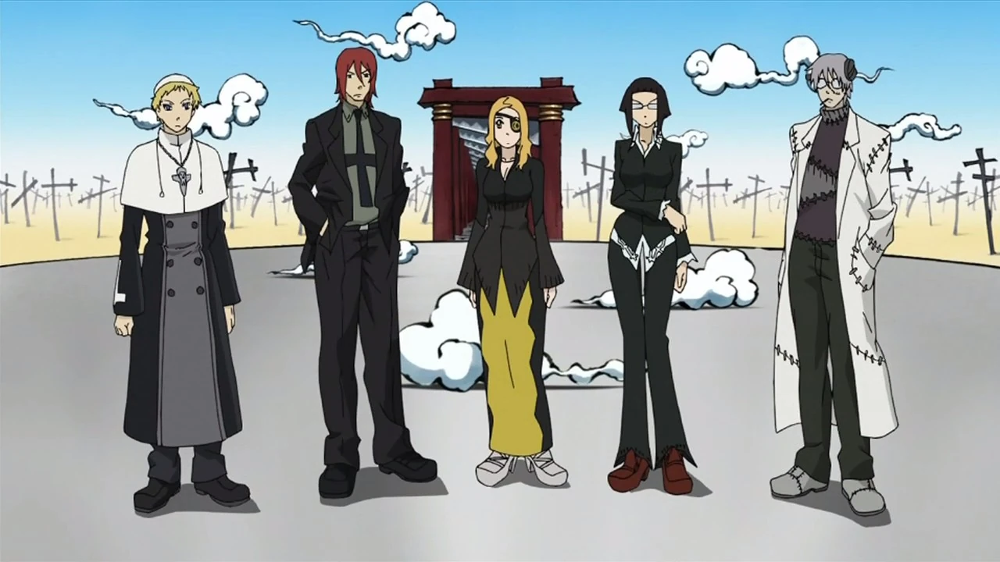

Soul Eater

Overview:
Soul Eater is a Japanese manga and anime series created by Atsushi Ohkubo. Set in a fictional world where humans with the ability to transform into weapons are partnered with "meisters," the story follows their adventures at the Death Weapon Meister Academy (DWMA) in Death City, Nevada.Students at the DWMA train to defeat evil beings and collect their souls. The ultimate goal is for a weapon partner to consume 99 evil human souls and one witch's soul. If successful, the weapon can evolve into a "Death Scythe," which is powerful enough to be wielded by the school's headmaster, Shinigami (Death).
The main characters are divided into three teams, with the story focusing on their development as they battle evil forces and prevent a destructive ancient evil known as the Kishin from being revived.
- Maka Albarn is the main protagonist of the manga and anime series Soul Eater. A student at the Death Weapon Meister Academy (DWMA), she is a "Meister" tasked with hunting evil souls, and her ultimate goal is to turn her partner, Soul Evans, into a Death Scythe worthy of being wielded by the Grim Reaper himself. Maka is portrayed as mature, studious, and determined, with a tendency to be short-tempered and overconfident. She is a dedicated student who takes her duties as a meister seriously. While she can be compassionate, her emotions, and particularly her insecurities about her strength, can sometimes get the better of her. She is willing to risk her life for her friends, and is known for her courage.

- Soul "Eater" Evans is a Demon Weapon and a main character in the manga and anime series Soul Eater. He attends the Death Weapon Meister Academy (DWMA) in Death City, where he partners with the scythe-meister Maka Albarn. Soul initially appears laid-back and nonchalant, trying to be a "cool" guy. Over time, however, he matures, becoming more serious, determined, and perceptive, especially concerning Maka. Despite his casual demeanor, he is fiercely loyal and protective of Maka, always putting her safety first. Born into a prominent family of classical musicians, the Evans, Soul has a natural talent for playing the piano.He chose to break away from the family's musical expectations after discovering he was a Demon Weapon, using it as a pretext to leave his past life behind and pursue a different path.

- Maka is the serious, intelligent planner, while Soul is the impulsive, headstrong brawler. This dynamic allows them to cover each other's weaknesses and makes them a formidable duo. Their bond is built on deep mutual trust and loyalty, which is essential for a meister and weapon to achieve Soul Resonance, the synchronization of their soul wavelengths.Their relationship has been interpreted by fans as having romantic overtones, though creator Atsushi Ōkubo has stated they are just close partners. In moments of crisis, they have both shown a willingness to sacrifice themselves for the other's safety.

- Black☆Star is an assassin, Shadow Weapon Meister, and one of the main protagonists of the manga and anime series Soul Eater. Known for his arrogance and overwhelming desire to surpass God, he is the last survivor of the infamous Star Clan of assassins. His partner is the multi-form Demon Weapon Tsubaki Nakatsukasa. Black☆Star's brash, egotistical personality is a defining trait, often causing him to favor making a flashy entrance rather than using stealth, the hallmark of a true assassin. This behavior is partly a trauma response to the prejudice he experienced for his clan's dark reputation, which has led him to seek fame and recognition. However, beneath the loud exterior, Black☆Star is shown to be a capable and intelligent fighter with a strong moral code and fierce loyalty to his friends. Throughout the series, especially after his fated encounter with the legendary swordsman Mifune, he grows and matures, dedicating himself to the "Path of the Warrior" rather than succumbing to the temptation of madness.

- Tsubaki Nakatsukasa is a major protagonist in the anime and manga series Soul Eater. She is the Demon Weapon partner of the assassin Meister Black☆Star and possesses the unique ability to transform into multiple ninja-themed weaponsTsubaki is kind, patient, and mature, acting as the calming force to her reckless and arrogant partner, Black☆Star. She is often embarrassed by his showboating but remains loyal and supportive. Tsubaki comes from the ancient Nakatsukasa Clan, a family of Demon Weapons with the rare ability to wield multiple forms. She joined the Death Weapon Meister Academy to stop her older brother, Masamune, who was corrupted by power and becoming a Kishin.

- Their partnership is built on mutual respect and admiration. Though they have opposite personalities, their contrasting dynamic makes them a formidable team. Tsubaki was the only person to be impressed by Black☆Star's grandstanding at the entrance ceremony, which led to their pairing.Their contrasting personalities create a dynamic that works in both life and battle. Tsubaki attempts to get Black☆Star to focus, while he pushes them both beyond their comfort zones. She provides a grounding influence, and he gives her the courage to be more assertive.They form a powerful and synchronized fighting unit through their "soul resonance." Their relationship is one of the most stable and supportive in the series, built on a strong friendship that allows them to live together and implicitly trust one another with their lives.

- Death the Kid is one of the main protagonists in the anime and manga series Soul Eater. He is the son of Lord Death and an incredibly skilled student at the Death Weapon Meister Academy (DWMA), paired with the demon twin guns Liz and Patty Thompson.Kid is a shinigami (death god) who is pathologically obsessed with perfect, bilateral symmetry. This compulsion is so extreme that it can become a major weakness, causing him to have a mental breakdown or lose his focus in battle if he notices something is asymmetrical. His own asymmetrical hair, which has three white stripes only on one side, is a constant source of agony for him.As a natural-born god, Kid's potential power is far beyond that of his peers. He excels at wielding the twin pistol weapons Liz and Patty simultaneously, a feat that is extremely difficult for other meisters. He also utilizes a martial arts style called Death God Taijutsu.

- Liz and Patty refer to the Thompson sisters, a pair of demon weapons in the anime and manga series Soul Eater. The two sisters are partner weapons to Death the Kid, the son of Lord Death. Elizabeth "Liz" Thompson the older, more mature, and serious of the two sisters. Despite being the cooler-headed sibling, Liz is terrified of ghosts and supernatural beings. She is also prone to being cynical, but is protective and fiercely loyal to her friends and her younger sister. Raised on the streets of Brooklyn after being abandoned by their mother, Liz resorted to a life of crime as one of the notorious "Brooklyn Devils" to protect herself and Patty. Patricia "Patty" Thompson is the younger sister and the twin demon weapon to Liz. Patty is known for her cheerful, simple-minded, and childlike demeanor. However, this personality can flip to a frighteningly intense and almost insane anger when she is pushed too far.

- Kid is a powerful Meister and the son of the Grim Reaper, while Liz and Patty are twin Demon Weapons who can transform into symmetrical pistols for Kid to use in combat.The trio's relationship is a central part of the Soul Eater story. While Liz is often annoyed by Kid's fixation on symmetry and Patty finds it entertaining, both have a deep admiration for Kid, who rescued them from their lives as petty criminals. Their contrasting personalities help Kid cope with his neurosis and develop into a more complete individual as the series progresses. As Demon Weapons, Liz and Patty can transform into identical pistols. When Kid performs a Soul Resonance with them, he can execute incredibly powerful attacks, including the Death Cannon. Before joining the Death Weapon Meister Academy (DWMA), Liz and Patty were street thugs known as the "Brooklyn Devils." They were initially recruited by Death the Kid when he came to New York to stop their criminal activities. Death the Kid was drawn to them because their weapon forms were perfectly symmetrical, a major obsession for him. The sisters initially joined him with the intention of exploiting his wealth, but they eventually developed a genuine bond and admiration for their meister. The trio shares a close relationship. While Liz is often annoyed by Kid's obsessive-compulsive tendencies, Patty typically finds his breakdowns amusing. Both sisters help him cope and motivate him when his perfectionism gets the best of him.

Extra Characters:
Death
Lord Death (also known as Shinigami-sama) is a major protagonist in the Soul Eater series and the powerful founder and headmaster of the Death Weapon Meister Academy (DWMA) located in Death City. He is a kind, wise, and benevolent figure who maintains world order and prevents the rise of a new Kishin (demon god).

The Staff
The main teachers at Death Weapon Meister Academy (DWMA) in Soul Eater include the powerful meister Franken Stein and the zombie instructor Sid Barrett. Other prominent faculty members are the Death Scythe Marie Mjolnir, the former doctor and current meister Mira Naigus, and the headmaster, Lord Death. Spirit Albarn also serves as a temporary substitute teacher. The teachers at the Death Weapon Meister Academy (DWMA) in Soul Eater are responsible for training and developing meisters and weapons to maintain world order and protect peace. Their roles include creating and teaching a curriculum, supervising students, and preparing them for combat against evil forces like witches and kishin. They also act as mentors, supporting students' personal growth and providing them with the discipline and skills to become capable agents of the DWMA

Watch Soul Eater on Crunchyroll!
Listen to the first ost on Youtube!